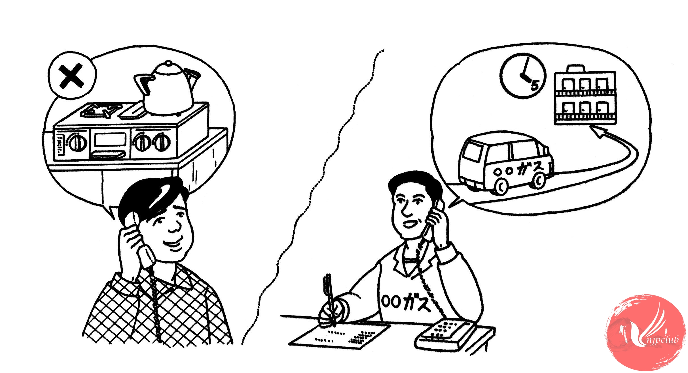

| 係員： |
はい、ガスサービスセンターで ございます。 |
| タワポン： |
あのう、ガスレンジの 調子が おかしいんですが ･････。 |
| 係人： |
どんな 具合ですか。 |
| タワポン： |
先週 直して もらった ばかりなのに、また 火が 消えて しまうんです。 |
|
危ないので、すぐ 見に 来て くれませんか。 |
|
| 係人： |
わかりました。5時ごろには 行けると 思います。 |
|
ご住所と お名前を お願いします。 |
|
| ‐‐‐‐‐‐‐‐‐‐‐‐‐‐‐‐ | |
| タワポン： |
もしもし、5時ごろに ガスレンジを 見に 来て くれるはずなんですが、まだですか。 |
| 係人： |
申し訳 ありません。どちら様でしょうか。 |
| タワポン： |
タワポンです。 |
| 係人： |
少々 お待ち ください。係人に 連絡しますから。 |
| ‐‐‐‐‐‐‐‐‐‐‐‐‐‐‐‐ | |
| 係人： |
お待たせしました。今 そちらに 向かって いるところです。 |
|
あと 10分ほど お待ち ください。 |